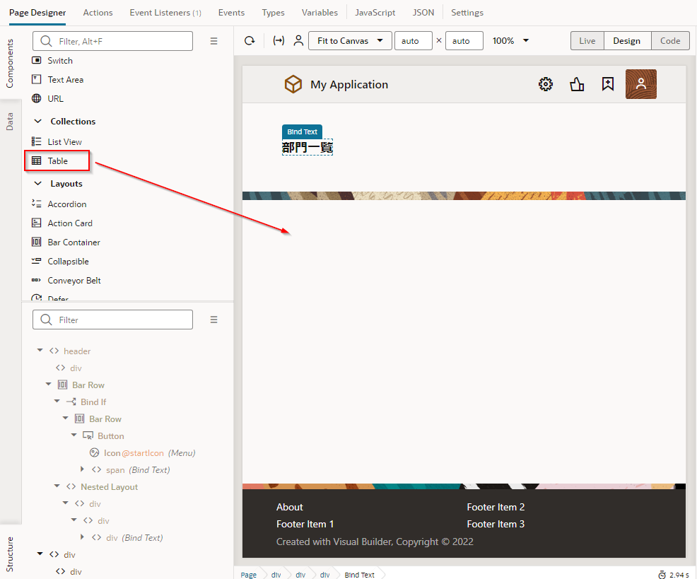
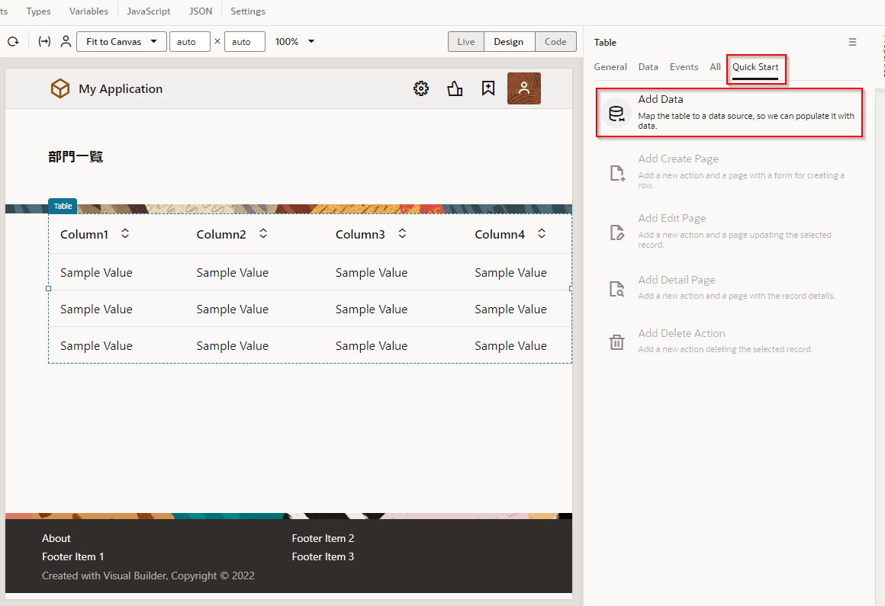
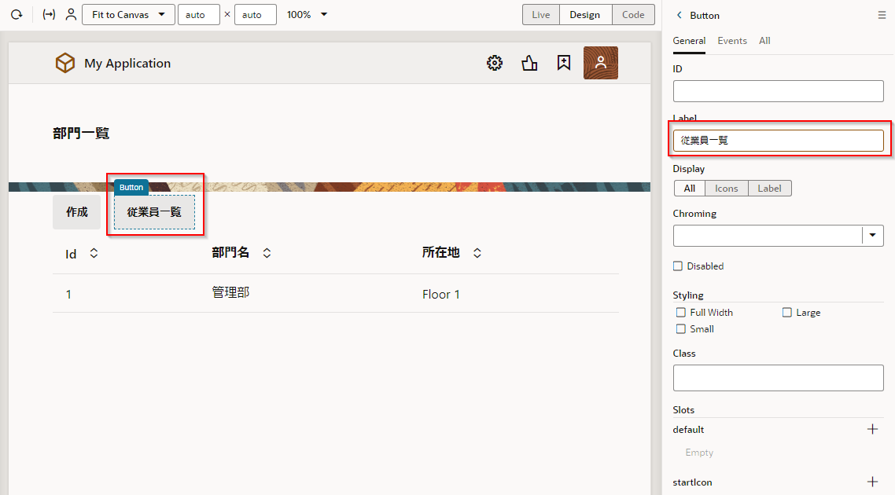
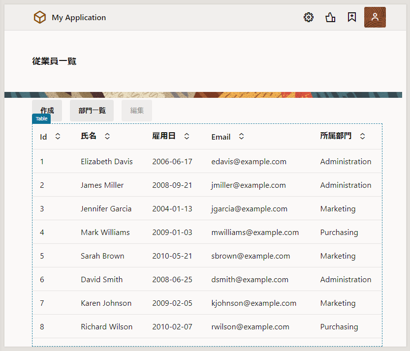
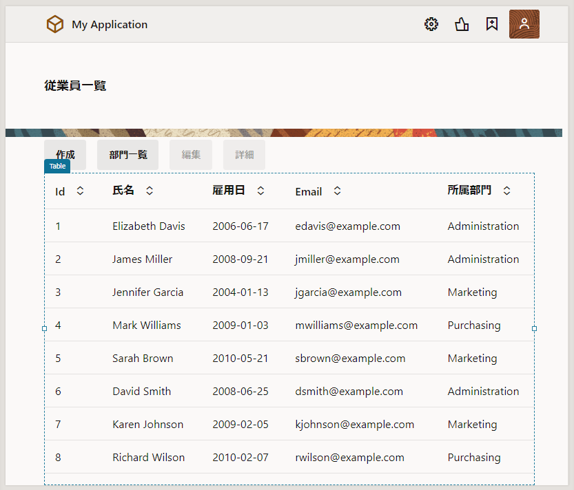
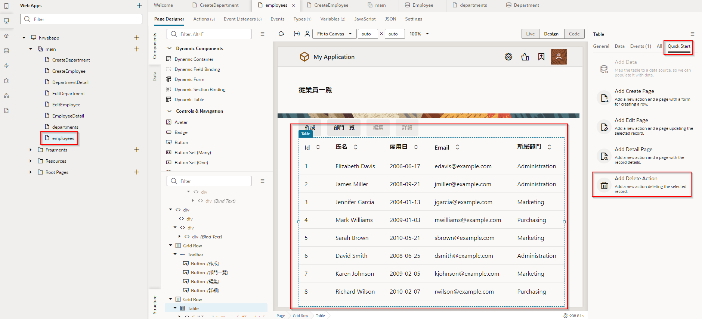

Visual Builder Cloud Service (VBCS) は、ユーザー・インタフェース(UI)・コンポーネントをページにドラッグ＆ドロップするだけで、Webアプリケーションやモバイル・アプリケーションを作成するためのビジュアル開発ツールです。 ボタンをクリックしてビジネス・オブジェクトを作成し、アプリケーションにCSVファイルをインポートしてデータを追加することができます。
このチュートリアルでは、部門と従業員のレコードを参照および作成、編集、削除するアプリケーションを作成します。
TIPS
VBCSは単体でサービスをご利用することが可能ですが、Integration Cloud Serviceの一機能としてもご利用可能です。どちらも機能としては同じですが課金体系が異なります。詳細は以下のリンクをご確認ください。
・ Integration Cloud Service 価格 (※VBCSの利用に関しては1時間当たりのアクティブユーザー数に対して課金が発生します。詳しくはこちら)
・ Visual Builder Cloud Service 価格
前提条件
-
Oracle Integration Cloud インスタンスの作成
Oracle Integration(OIC) を使い始めるための準備作業として、OIC インスタンスの作成が必要になります。この文書は OIC インスタンスの作成方法を ステップ・バイ・ステップで紹介するチュートリアルです。 -
OIC インスタンスの ServiceAdministrator ロールが付与されたユーザーが準備されていること
(参考) Oracle Integration Roles and Privileges
https://docs.oracle.com/en/cloud/paas/integration-cloud/integration-cloud-auton/oracle-integration-cloud-roles-and-privileges.html#GUID-44661068-C31A-4AB5-BC24-B4B90F951A34
Webアプリケーションの作成
このパートでは、VBCSで Web アプリケーションを作成する際に、最初に定義する ビジュアル・アプリケーション と Web アプリケーション を作成する手順を説明します。
ビジュアル・アプリケーションの作成
VBCSでは、最初に ビジュアル・アプリケーション を作成します。 ビジュアル・アプリケーションは、Web アプリケーションやモバイル・アプリケーションを開発するために使用するリソースの集まりです。 アプリケーションのソース・ファイルや、メタデータが記述された JSON ファイルを含んでいます。
Web ブラウザを開き、提供された OIC インスタンスのURLを入力します。もしくはOCIのコンソールから「開発者サービス」－「アプリケーション統合」から作成済みのOICインスタンスを選択し、「サービス・コンソール」からOICコンソールを開きます。

左ナビゲーションメニューの「ビジュアル・ビルダー」をクリックします。

VBCS の 「Visual Applications」 ページが表示されたら、「New Application」 ボタンをクリックします。

「Create Application」 ダイアログ・ボックスが表示されます。 次の表のように設定します。
| 設定項目 | 設定する値 | 説明 |
|---|---|---|
| 「Application name」 | HR Application | アプリケーションにつける名前 |
| 「Id」 | HR_Application_xxx | アプリケーションのID。アプリケーションの URL にも用いられるので、VBCSのインスタンス内で一意である必要があります。 xxx の部分はご自身のイニシャルなどと置き換えてください。 |
| 「Description」 | Tutorial Application | アプリケーションの簡単な説明 |
| 「Application template」 | Empty Application (デフォルト) | アプリケーションのテンプレート |

値を設定したら、「Create Application」 ダイアログ・ボックスの 「Finish」 ボタンをクリックします。
ビジュアル・アプリケーションが作成されると、VBCSのアプリケーション・デザイナでビジュアル・アプリケーションがオープンします。 アプリケーション・デザイナにはアーティファクト・ブラウザとWelcomeスクリーンが表示されます。 Welcomeスクリーンには、VBCSでアプリケーションを作成するためのタスクのガイドが表示されます。

アプリケーション・デザイナの左側の領域はアーティファクト・ブラウザと呼ばれる領域で、アプリケーションを構成する各種ソース・ファイル（HTML/CSS/JavaScriptなど）や、データ・アクセスや画面フローの設定などアプリケーションを実行する際に必要となるメタデータ（JSONファイル）が表示され、アクセスできます。
アーティファクト・デザイナには、次のタブ・ページがあります。
| 項目 | 説明 | |
|---|---|---|
| Mobile Applications | モバイルデバイスの機能を利用するネイティブモバイルアプリケーションを作成します。 | |
| Web Applications | デスクトップおよびモバイルデバイスのブラウザーで実行される最新のWebアプリケーションを作成します。 | |
| Services | サービス接続を作成して、サービスによって提供される既存のRESTエンドポイントを使用し、それらをアプリケーションで使用します。 | |
| Business Objects | ビジネスオブジェクトを作成して、アプリケーションのニーズに基づいてデータベースのカスタムRESTエンドポイントを定義します。 | |
| Components | アプリケーションで使用する追加のコンポーネントを入手します。 | |
| Processes | Oracle IntegrationのProcess機能を使用して、ビジネスプロセスをアプリケーションに統合します。 | |
| Source View | 作成されたアプリケーションをソース形式で確認・編集することができます。 |
画面上部のアプリケーションの名前（Application nameとして指定したテキスト）の右隣に表示される 「DEV」 と 「1.0」 はそれぞれ、アプリケーションのステータス（development: 開発中を表す）とバージョンを表しています。

Web アプリケーションの作成
VBCS のビジュアル・アプリケーションは、1つ以上のWebアプリケーションまたはモバイル・アプリケーションを持ちます。 このチュートリアルでは、Webアプリケーションを作成します。
アーティファクト・ブラウザの 「Web Applications」 タブ をクリックします。
そのあと「+ Web Application」 ボタン(またはアーティファクト・ブラウザの右上にある 「＋」 アイコン)をクリックします。

「Create Web Application」 ダイアログ・ボックスが表示されたら、 「Application Name」 フィールドに 「HRWebApp」 と入力し、 Navigation Style に 「None」 を選択し、 「Create」 ボタンをクリックします。

HRWebApp のアーティファクトが生成されます。 ページ・デザイナで表示されている 「main-start」 が、アプリケーションの起動時に最初に表示される画面です。

アーティファクト・ブラウザで 「hrwebapp」 ノードを展開するとWebアプリケーションの構造が表示されます。 「main」 ノードを展開すると 「main-start」 ページが表示されます。
ビジネス・オブジェクトの作成
このパートでは、前のパートで作成したビジュアル・アプリケーションにビジネス・オブジェクトを作成します。 ビジネス・オブジェクトはアプリケーションで扱うデータを保持するためのリソースです。 ビジュアル・アプリケーションにビジネス・オブジェクトを作成すると、データを格納するためのデータベース・テーブルが自動的に作成され、そのデータを参照、作成、更新、削除するためのREST APIにアクセスできるようになります。
このパートでは、次の3つのビジネス・オブジェクトを作成します。
| ビジネス・オブジェクト | 説明 |
|---|---|
| Location | オフィスの所在地のデータ |
| Department | 部門のデータ |
| Employee | 従業員のデータ |
次の図は、このパートで作成する3つのビジネス・オブジェクト間の関係をダイアグラムで表したものです。

ビジネス・オブジェクト Location の作成
ここでは、オフィスの所在地を表すビジネス・オブジェクト Location を作成します。 次に、作成したビジネス・オブジェクトにフィールドを追加します。 最後に、CSV ファイルからデータをインポートします。
・ビジネス・オブジェクトの作成
アーティファクト・ブラウザの 「Business Objects」 タブを開いて、 「+ Business Object」 ボタン、または右上部にある 「＋」 アイコンをクリックします。

「New Business Object」 ポップアップ・ボックスが表示されたら、 以下の内容を設定して、 「Create」 ボタンをクリックします。
| 設定項目 | 説明 | |
|---|---|---|
| 「Label」 | Location | 作成するビジネス・オブジェクトの表示名 |
| 「Name」 | Location | 作成するビジネス・オブジェクトを識別するためのID。Labelと同じ値が自動的に設定されます。 |

ビジネス・オブジェクトが作成されたら、 「Fields」 タブをクリックします。 5つのフィールドが定義されています。
| フィールド | 説明 |
|---|---|
| createdBy | レコードを作成したユーザー |
| creationDate | レコードの作成日時 |
| Id | レコードを一意に識別する ID |
| lastUpdateDate | レコードの最終更新日時 |
| lastUpdatedBy | レコードを更新したユーザー |

・フィールド name の作成
「Fields」 タブ・ページの 「+」 ボタンから「Create Field」をクリックします。

ポップアップ・ボックスが表示されたら、追加するフィールドの設定を次の表のように設定し、 「Create Field」 ボタンをクリックします。
| 設定項目 | 設定する値 | 説明 |
|---|---|---|
| 「Label」 | Name | 追加するフィールドのラベル |
| 「Field Name」 | name | 追加するフィールドを識別するための名前。Labelを入力すると自動的に設定されます。 |
| 「Type」 | String (「A」のアイコン) | 追加するフィールドのデータ型 |

フィールド name が追加されると画面の右端のプロパティ・エディタに name のプロパティが表示されます。 「Constraints」 の下にある 「Required」 をチェックします。

プロパティ・エディタで 「Required」 をチェックすると、フィールド name は必須データ項目に設定されます。 レコードの作成や編集フォームで、値が入力されているかどうか自動的にチェックされるようになります。フィールドnameの「Required」 列にチェック・マークが表示されていることを確認します。

「Endpoints」 タブ・ページを開くと、このビジネス・オブジェクトのデータの参照、作成、更新、削除のための REST API のエンドポイントが一覧できます。

エンドポイントURL配下のそれぞれの行は左から、HTTPメソッド、エンドポイントの説明(英語)、エンドポイントの説明、エンドポイントを識別する名前が記述されています。
・データのインポート
Location.csv をダウンロードします。 Location.csv には、4件の所在地データが含まれています。
アーティファクト・ブラウザの右上部に表示されている メニュー・アイコンをクリックし、 「Data Manager」 を選択します。

「Data Manager」 タブ・ページが表示されます。 「Import from File」 ボックスをクリックします。
「Import Data」 ダイアログ・ボックスが表示されます。 「Upload a file or drag it here」 と書かれたボックスをクリックするとファイルを開くウィンドウが表示されるので、ダウンロードした Location.csv を開き(またはドラッグ＆ドロップ)、 「Import」 ボタンをクリックします。

「Import from File」 ダイアログ・ボックスにインポートが成功したことを表すメッセージが表示されたら、 「Close」 ボタンをクリックします。

アプリケーション・ナビゲーション・エリアの 「Business Objects」 タブ・ページで、 「Location」 を選択します。 「Data」 タブ・ページを開くと、追加されたレコードが表示されます。

尚、フィルターアイコン  から表示するフィールドを選択できます。
から表示するフィールドを選択できます。

ビジネス・オブジェクト Department の作成
ここでは、部門を表すビジネス・オブジェクト Department を作成します。
ビジネス・オブジェクト Department を作成するためには、事前にビジネス・オブジェクト Location を作成してある必要があります。 ビジネス・オブジェクト Location の作成手順は『ビジネス・オブジェクト Location の作成』で説明しています。
・ビジネス・オブジェクトの作成
アーティファクト・ブラウザの 「Business Objects」 タブ をクリックし、右上部にある 「+」 → 「Business Object」 をクリックします。

「New Business Object」 ポップアップ・ボックスが表示されたら、次の表のように設定して、 「Create」 ボタンをクリックします。
| 設定項目 | 設定する値 |
|---|---|
| 「Label」 | Department |
| 「Name」 | Department(※Labelを入力すると自動的に設定されます。) |

・フィールド name の作成
ビジネス・オブジェクト Department の「Fields」 タブ・ページの 「+」 ボタンから「Create Field」をクリックします。

ポップアップ・ボックスが表示されたら、追加するフィールドに以下の内容を設定し、 「Create Field」 ボタンをクリックします。
| 設定項目 | 設定する値 | 説明 |
|---|---|---|
| 「Label」 | Name | 追加するフィールドのラベル |
| 「Field Name」 | name | 追加するフィールドを識別するための名前。Labelを入力すると自動的に設定されます。 |
| 「Type」 | 「A」(Stringのアイコン) | 追加するフィールドのデータ型 |

フィールド Name が追加されると画面の右端のプロパティ・エディタに Name のプロパティが表示されます。 「Constraints」 の下にある 「Required」 をチェックします。

プロパティ・エディタで 「Required」 をチェックすると、追加されたフィールド Name は必須データ項目に設定されます。 「Required」 列にチェック・マークが表示されていることを確認します。

・フィールド location の作成
次は同様の手順でフィールド locationを作成します。 ビジネス・オブジェクト Department の「Fields」 タブ・ページの 「+」 ボタンから「Create Field」をクリックし、ポップアップ・ボックスで以下の内容を入力します。
| 設定項目 | 設定する値 | 説明 |
|---|---|---|
| 「Label」 | Location | 追加するフィールドのラベル |
| 「Field Name」 | location | 追加するフィールドを識別するための名前。Labelを入力すると自動的に設定されます。 |
| 「Type」 |  (Referenceのアイコン) を選択 (Referenceのアイコン) を選択 |
追加するフィールドのデータ型 |
| 「Reference Business Object」 | 「Location」 を選択 | 作成するフィールドがデータを参照するビジネス・オブジェクトを選択 |
| 「Default Display Field」 | 「Name」 を選択 | データを編集する際のリストの表示に使用される、参照先のビジネス・オブジェクト（今回は Location）のフィールドを選択 |

ビジネス・オブジェクト Department の 「Endpoints」 タブ・ページを開きます。 ビジネス・オブジェクト Department のデータを操作するためのエンドポイントが一覧できます。

ビジネス・オブジェクト Department は Location を参照しているので、 /Department/{Department_Id}/child/locationObject というエンドポイントで Department が参照している Location のデータにアクセスできます。
ビジネス・オブジェクト Employee の作成
ここでは、従業員を表すビジネス・オブジェクト Employee を作成します。
ビジネス・オブジェクト Employee を作成するためには、事前にビジネス・オブジェクト Location と Department を作成してある必要があります。 ビジネス・オブジェクト Location の作成手順は『ビジネス・オブジェクト Location の作成』で、Department の作成手順は『ビジネス・オブジェクト Department の作成』でそれぞれ説明しています。
・ビジネス・オブジェクトの作成
アーティファクト・ブラウザの 「Business Objects」 タブ をクリックし、右上部にある 「+」 → 「Business Object」 をクリックします。

「New Business Object」 ポップアップ・ボックスが表示されたら、次の表のように設定して、 「Create」ボタンをクリックします。

・フィールド name の作成
ビジネス・オブジェクト Employee の「Fields」 タブ・ページの 「+」 ボタンから「Create Field」をクリックします。
ポップアップ・ボックスが表示されたら、追加するフィールドの設定を次の表のように設定し、 「Create」 ボタンをクリックします。
| 設定項目 | 設定する値 |
|---|---|
| 「Label」 | Name |
| 「Field Name」 | name (Labelを入力すると自動的に設定されます) |
| 「Type」 | 「A」(Stringのアイコン) を選択 |

フィールド Name が追加されると画面の右端のプロパティ・エディタに Name のプロパティが表示されます。 「Constraints」 の下にある 「Required」 をチェックします。

プロパティ・エディタで 「Required」 をチェックすると、追加されたフィールド Name は必須データ項目に設定されます。 「Required」 列にチェック・マークが表示されていることを確認します。

・フィールド department の作成
ビジネス・オブジェクト Employee の「Fields」 タブ・ページの 「+」 ボタンから「Create Field」をクリックします。

ポップアップ・ボックスが表示されたら、追加するフィールドの設定を次の表のように設定し、 「Create Field」 ボタンをクリックします。
| 設定項目 | 設定する値 |
|---|---|
| 「Label」 | Department |
| 「Field Name」 | department |
| 「Type」 | 「」(Referenceのアイコン) を選択 |
| 「Reference Business Object」 | 「Department」 を選択 |
| 「Default Display Field」 | 「Name」 を選択 |

・フィールド hireDate の作成
ビジネス・オブジェクト Employee の 「Fields」 タブ・ページの 「+」 から 「Create Field」 ボタンをクリックします。

ポップアップ・ボックスが表示されたら、追加するフィールドの設定を以下の表のように設定し、 「Create Field」 ボタンをクリックします。
| 設定項目 | 設定する値 |
|---|---|
| 「Label」 | Hire Date |
| 「Field Name」 | hireDate |
| 「Type」 |  (Dateのアイコン)を選択 (Dateのアイコン)を選択 |

・フィールド email の作成
ビジネス・オブジェクト Employee の 「Fields」 タブ・ページの 「+」から 「Create Field」 ボタンをクリックします。

ポップアップ・ボックスが表示されたら、追加するフィールドの設定を以下のように設定し、 「Create Field」ボタンをクリックします。
| 設定項目 | 設定する値 |
|---|---|
| 「Label」 | |
| 「Field Name」 | |
| 「Type」 |  (Emailのアイコン)を選択 (Emailのアイコン)を選択 |

4つのフィールドを追加したら、ビジネス・オブジェクト Employee の 「Endpoints」 タブ・ページを開きます。

次にエンドポイントにLocationオブジェクトを追加します。 「Edit Endpoints」をクリックし、Locationにチェックを入れ「Save」をクリックします。

Employee は Department を参照し、 DepartmentはLocation を参照しているので、それぞれのノードを展開するとこのパートで作成した3つのビジネス・オブジェクトすべてにアクセスできることがわかります。

データを参照・作成するページの作成
このパートでは、前のパートで作成したビジネス・オブジェクト DepartmentとEmployeeそれぞれのレコード一覧をテーブル形式で表示するページとレコードを作成するページを作成します。
Department のレコードの一覧を表示するテーブルの追加
・見出しの追加
アーティファクト・ブラウザの 「Web Applications」 タブ を開きます。 「main」 ノードを展開し、「main-start」 をクリックします。 アプリケーション・デザイナで main-start ページが表示されます。
アプリケーション・デザイナの左側には、コンポーネント・パレットが表示されます。 コンポーネント・パレットは、デザイナの左にある コンポーネントタブで表示/非表示を切り替えることができます。

また、ナビゲータも表示/非表示を切り替えることができます。 ナビゲータを非表示にするには、現在選択中のタブをクリックします。ナビゲータ再度表示する場合は任意のタブをクリックします。

ページに見出しを追加します。 コンポーネント・パレットの 「Common」 の下にある 「Heading」 コンポーネントをページにドラッグ＆ドロップします。

ページに Heading コンポーネントが追加されると、プロパティ・インスペクタで Heading コンポーネントの設定を変更できます。 デザイナ・ツールの右側にプロパティ・インスペクタが表示されない場合は、画面右上に表示される プロパティタブをクリックします。
Heading コンポーネントのプロパティ・インスペクタで、 「Text」 フィールドに 「部門一覧」 と入力します。

・テーブルの追加
コンポーネント・パレットを下にスクロールし、 「Collection」 カテゴリの 「Table」 コンポーネントを、追加済みの Heading コンポーネントの下にドラッグ＆ドロップします。

追加された Table コンポーネントのプロパティ・インスペクタで Quick Start タブを開き、「Add Data」 をクリックします。

「Add Data」 ダイアログ・ボックスが表示されます。 「Locate Data」 ページでは、テーブルに表示するデータを取得する REST エンドポイントを選択します。 「Business Objects」 の 「Department」 を選択します。 この手順により、REST エンドポイント（GET /Department）にてデータを取得する設定ができます。 「Next」 ボタンをクリックします。

「Add Data」 ダイアログ・ボックスの 「Bind Data」 ページでは、テーブルの列を選択します。 「item[i]」 ノードの下の 「id」 と 「name」 を順番に選択します。

「Add Data」 ダイアログ・ボックスの右側にあるColumnsリストに、 「items/id」、 「items/name」 の順に表示されていることを確認します。 表示されている順番が異なる場合は、 ドラッガブル・アイコン  をドラッグ＆ドロップして順番を入れ替えます。
をドラッグ＆ドロップして順番を入れ替えます。
次に、 「locationObject」 とその下の 「items」 ノードを展開します。 このとき、 「item[i]」 ノードも同時に展開されるので、「name」 をチェックします。

「Columns」 リストの一番下に、「name」 が追加されていることを確認したら、「Next」 ボタンをクリックします。
「Add Data」 ダイアログ・ボックスの 「Define Query」 ページでは、そのまま 「Finish」 ボタンをクリックします。

アプリケーション・デザイナの画面に戻ります。テーブルが指定したカラムに変更されていることを確認します。

追加されたテーブルの設定の確認と変更
アプリケーション・デザイナの Variables タブをクリックします。 アプリケーション・デザイナの Variables エディタでは、ページに定義された変数が一覧できます。 main-start ページには、 「departmentListSDP」 という名前の変数が定義されています。

この変数は、Quick Start メニューによって設定した REST エンドポイント（GET /Department）によって取得したデータを保持します。
アプリケーション・ナビゲータの Page Designerタブ をクリックします。 追加されたテーブルをクリックし、プロパティ・インスペクタの 「Data」 タブ・ページを開きます。 「Data」 フィールドには、テーブルに表示するデータの設定が記述されています。

テーブル・コンポーネントのプロパティ・インスペクタの 「Data」 タブ・ページでは、テーブルの列ヘッダーのテキストを変更できます。
- 「Table Columns」 リストの上から二番目の 「Name (name)」 をクリックして 「部門名」 に変更します。
- 「Table Columns」 リストの一番下に表示されている 「Name (locationObject)」 をクリックして 「所在地」 に変更します。

TIPS
各項目の 「▶」をクリックして、Column Detailから名前を変更することもできます。
Department のレコードを作成するページの追加
・ページの作成
アプリケーション・デザイナで main-start ページを開き、『Department のレコードの一覧を表示するテーブルの追加』 で追加した Table コンポーネントを選択します。 Table コンポーネントのプロパティ・インスペクタで Quick Start から 「Add Create Page」 をクリックします。

「Add Create Page」 ダイアログ・ボックスが表示されます。 「Select Endpoint」 ページでは、レコードを作成する際にコールする REST エンドポイントを指定します。 「Business Objects」 → 「Department」 を選択します。 この設定により、REST エンドポイント（POST /Department）にてデータを登録する設定ができます。
「Next」 ボタンをクリックします。

次に「Add Create Page」 ダイアログ・ボックスの 「Page Details」 ページでは以下のように設定します。
- 画面左側の「Endpoint Structure」 で 「name」 と 「location」 を順番にチェックします。
TIPS
ここで選択されたフィールドは、データを作成するフォームで値を入力できます。 ビジネス・オブジェクト Department の location フィールドは、ビジネス・オブジェクト Location のデータを参照するように設定したので、作成フォームではドロップダウン・リストから値を選択できるようになります。
-
画面右側の 「Button label」 テキスト・フィールドの値を 「作成」 に変更します。 クリックすると作成されるページにナビゲートするボタンのラベル・テキストが 「作成」 に設定されます。
-
「Page Title」 テキスト・フィールドの値を 「部門レコードの作成」 に変更します。 作成されるページのタイトルに使用されます。
-
「Page name」 にはCreateDepartmentを入力します。
-
「Finish」 ボタンをクリックします。

「Add Create Page」 ダイアログ・ボックスで 「Finish」 ボタンをクリックすると、main-start ページの Heading コンポーネントと Table コンポーネントの間に Toolbar コンポーネントが追加されます。 Toolbar コンポーネントの中には、「作成」 ボタンが配置されています。
・作成したページの動作確認
アーティファクト・ブラウザで 「CreateDeparment」 ページをクリックし、アプリケーション・デザイナで開きます。
画面右上にある 「Live」 ボタンをクリックすると、ボタンが緑色に変化します。 これによりデザイナがライブ・モードになり、CreateDepartment ページの動作確認が可能な状態になります。

「作成」ボタンをクリックし、「Name」 フィールドに 管理部 と入力し、 「Location」 フィールドで 「Floor 1」 を選択したら、 「Save」 ボタンをクリックします。

main-start ページをアプリケーション・デザイナで開きます。 テーブルにこのセクションで追加したデータが表示されない場合は、 Reload Page  ボタンをクリックして、ページの再読み込みを実行します。
ボタンをクリックして、ページの再読み込みを実行します。
・ページ・ナビゲーションの設定の確認
ライブ・モードが有効になっている（Liveボタンが緑色で表示されている）場合は、 「Design」 ボタンをクリックしてデザイン・モードに戻します。
main-start ページに追加された 「作成」 ボタンをクリックします。 プロパティ・インスペクタの 「Events」 タブ・ページを開くと、 「作成」 ボタンがクリックされる（ojActionイベントが発生する）と 「navigateToCreateDepartmentChain」 という名前のアクション・チェーンが起動されるように設定されていることがわかります。

プロパティ・インスペクタの 「Events」 タブ・ページで、 「Action Chain」 の下に表示されている 「navigateToCreateDepartmentChain」 をクリックします。 アクション・チェーンの設定がビジュアルに表示されます。
・Department レコードの作成処理の設定の確認
アーティファクト・ブラウザで 「CreateDepartment」 ページをクリックし、 Variables タブをクリックします。 CreateDepartment ページには、2つの変数が定義されていることがわかります。
| 変数 | 説明 |
|---|---|
| department | ビジネス・オブジェクト Department のレコードを作成するためのデータを保持するための変数です。 name は、name フィールドに、 location は location フィールドにそれぞれバインドされています。 |
| locationListSDP | Locationフィールドの選択肢を表示させるために使用されます。 |

CreateDepartment ページで Page Designer タブをクリックします。 「Save」 ボタンを選択し、プロパティ・インスペクタの 「Event」 タブ・ページを開きます。

clickイベントが発生したときはアクション・チェーン 「createDepartmentChain」 が実行されることが確認できます。
プロパティ・インスペクタの 「Events」 タブ・ページでアクション・チェーン 「createDepartmentChain」 をクリックすると、アクション・チェーンの処理フローがビジュアルに表示されます。 「Call REST Endpoint businessObjects/create_Department」 で、ビジネス・オブジェクト Department の REST エンドポイント create_Department (POST / Department) をコールしています。

データの作成が成功した場合は処理が成功したことを通知するメッセージを表示し、ひとつ前の画面にナビゲートします。 データの作成に失敗した場合は、エラーメッセージを表示します。
アクション・チェーンのダイアログで、 「Call REST Endpoint businessObjects/create_Department」 をクリックすると、プロパティ・インスペクタで REST エンドポイント呼び出しの設定を確認できます。 プロパティ・インスペクタを下にスクロールし、 「Parameters」 の横にある 「Assign」 をクリックします。

「Map Variables To Parameters」 ダイアログ・ボックスが表示されます。

パラメータ 「body」 には CreateDepartment ページの変数 department がマップされていることを確認したら、 「Cancel」 をクリックしてダイアログ・ボックスを閉じます。
Employee のレコードの一覧を表示するページの追加
・ページの作成
アーティファクト・ブラウザの 「Web Applications」タブから「hrwebapp」を展開し、 「main」 ノードの右に表示される 「＋」 アイコン(Create Page)をクリックします。

「Create Page」 ダイアログ・ボックスが表示されます。 「Create ID」 フィールドに初期表示される main- を削除し、 Employees と入力して 「Create」 ボタンをクリックします。
「Create」 ボタンをクリックすると、Employees ページが作成され、アプリケーション・デザイナで表示されます。

次にコンポーネント・パレットの 「Common」 の下にある 「Heading」 コンポーネントを Employees ページにドラッグ＆ドロップし、プロパティ・インスペクタで、 「Text」 フィールドに 「従業員一覧」 と入力します。
・テーブルの追加
コンポーネント・パレットを下にスクロールし、 「Collection」 カテゴリの 「Table」 コンポーネントを、追加済みの Heading コンポーネントの下にドラッグ＆ドロップします。
追加された Table コンポーネントのプロパティ・インスペクタで Quick Start タブを開き、「Add Data」 をクリックします。

「Add Data」 ダイアログ・ボックスが表示されます。 「Locate Data」 ページでは、テーブルに表示するデータを取得する REST エンドポイントを選択します。 「Business Objects」 → 「Employee」 を選択します。

「Add Data」 ダイアログ・ボックスの 「Bind Data」 ページでは、テーブルの列を選択します。 「item[i]」 ノードの下に表示されている 「id」、「name」、「hireDate」、「email」 を順番にチェックします。
「Add Data」 ダイアログ・ボックスの右側に表示される 「Columns」 リストに、次の順番で表示されていることを確認します。
- id
- name
- hireDate

表示されている順番が異なる場合は、 ドラッガブル・アイコン をドラッグ＆ドロップして順番を入れ替えます。
さらに同ページの 「departmentObject」 → 「items」 ノードを展開すると、その下にある 「item[i]」 ノードが自動的に展開されます。 「Name」 をチェックしてから 「Next」 ボタンをクリックします。

「Add Data」 ダイアログ・ボックスの 「Define Query」 ページでは、そのまま 「Finish」 ボタンをクリックします。

追加された Table コンポーネントのプロパティ・インスペクタを開き、 「Data」 タブをクリックします。 次の表のようにテーブルの列ヘッダーのテキストを変更します。
| 変更前 | 変更後 |
|---|---|
| Name (「Table Columns」 リストの上から2番目) | 氏名 |
| Hire Date | 雇用日 |
| Name (「Table Columns」 リストの上から2番目) | 所属部門 |

Employee のレコードを作成するページの追加
・ページの作成
『Employee のレコードの一覧を表示するページの追加』で作成した Employees（従業員一覧）ページをアプリケーション・デザイナの Page Designer タブ・ページで開きます。
追加された Table コンポーネントのプロパティ・インスペクタで Quick Start タブを開き、 「Add Create page」 をクリックします。

REST API のエンドポイントを選択します。 「Business Objects」 → 「Employee」 を選択し、 「Next」 ボタンをクリックします。

「Add Create page」 ダイアログ・ボックスの 「Page Details」 ページで以下のように設定します。
-
レコードを作成するフォームで値を指定する Employee ビジネス・オブジェクトのフィールドを選択します。画面左側の「Endpoint Structure」で「name」、「hireDate」、「email」、「department」 をチェックします。
-
ダイアログの右側に表示されている項目に以下の内容を入力し、「Finish」 ボタンをクリックします。
| 入力項目 | 入力する値 |
|---|---|
| Button label | 作成 |
| Page Title | 従業員レコードの作成 |
| Page name | CreateEmployee |

「Add Create Page」 ダイアログ・ボックスで 「Finish」 ボタンをクリックすると、main-start ページの Heading コンポーネントと Table コンポーネントの間に Toolbar コンポーネントが追加されています。 Toolbar コンポーネントの中には、「作成」 ボタンが配置されています。
・作成したページの動作確認
アーティファクト・ブラウザで 「CreateEmployee」 ページをクリックし、アプリケーション・デザイナで開きます。
画面右上にある 「Live」 ボタンをクリックして、ライブ・モードを有効します。 適当なデータを入力して、「Save」 ボタンをクリックします。
Employees（従業員一覧） ページをアプリケーション・デザイナで開いて追加したデータを確認します。 テーブルにこのセクションで追加したデータが表示されない場合は、 Reload Page ボタン をクリックして、ページの再読み込みを実行します。
画面右上にある 「Code」 ボタンをクリックすると、Employees ページの HTML ソースを確認したり、直接編集したりすることができます。
div タグや h1 タグなど通常の HTML タグのほかに、oj-table など、名前が oj- で始まるタグが使用されています。 oj- で名前が始まるタグは、 Oracle JavaScript Extension Toolkit (JET) が提供するコンポーネントです。
ページの名前の変更
ここまでのパートでは、次の3つのページを新たに作成しました。
| ページ名 | 説明 |
|---|---|
| CreateDepartment(部門レコードの作成) | ビジネス・オブジェクト Department のレコードを作成 |
| Employees(従業員一覧) | ビジネス・オブジェクト Employee の一覧を表形式で表示 |
| CreateEmployee(従業員レコードの作成) | ビジネス・オブジェクト Employee のレコードを作成 |
これらのページにあわせて、main-start ページの名前を Departments に変更してみます。
アーティファクト・ブラウザの Web Applications タブ・ページで 「hrwebapp」 → 「main」 ノードを展開し、 「main-start」 ページを右クリック →「Rename」をクリックします。

「Rename」 ダイアログ・ボックスが表示されたら、 「Id」 を main-start から departments に変更し、 「Rename」 ボタンをクリックします。

アーティファクト・ブラウザで、main-start ページが departments に変更されていることを確認します。

アーティファクト・ブラウザの Web Applications タブ・ページで 「hrwebapp」 → 「main」 をクリックし、 Settings タブを開きます。
「Default Page」 で、 「departments」 が選択されていることを確認します。

ページ間のナビゲーションの設定
このパートでは、前のパートで作成・編集したページ Departments (部門一覧), Employees (従業員一覧) にボタンを追加し、それぞれのページ間のナビゲーションを設定します。
Departments ページから Employees ページへのナビゲーション
ここでは、Departments （部門一覧）ページに、「従業員一覧」 ボタンを追加します。 「従業員一覧」 ボタンをクリックすると Employees ページ（従業員一覧）にナビゲートするように設定します。
アーティファクト・ブラウザの 「Web Applications」 タブ をクリックします。
-
「hrwebapp」 → 「main」 ノードを展開して、 「Departments」 ページを開きます。 アプリケーション・デザイナの Page Designer タブ・ページで開きます。
-
コンポーネント・パレットから、 「Button」 コンポーネントを Toolbar コンポーネントの中（「作成」 ボタンの右隣）にドラッグ＆ドロップします。

追加した Button コンポーネントのプロパティ・インスペクタを開きます。 「General」 タブ・ページの 「Text」 フィールドを 「従業員一覧」 と編集します。

「従業員一覧」 ボタンのプロパティ・インスペクタで、 「Events」 タブ・ページを開きます。 「+ New Event」 ボタンをクリックすると表示されるメニューから 「On ‘ojAction’」 を選択します。

これにより、「従業員一覧」 ボタンがクリックされた時に起動される、 Id が ButtonClickAction のアクション・チェーンが定義されます。
画面の左側には、アクション・パレットが表示されています。 アクション・パレットを下にスクロールし、 「Navigation」 カテゴリから 「Navigate」 を 「Start」 アクションの下に表示されている 「＋」 マークの上にドラッグ＆ドロップします。

画面の右側に 「Navigate」 パネルが表示されたら、 「Page」 プルダウンから「Peer Pages」－「employees」を選択します。

画面右上にある 「▷」(Run アイコン) をクリックします。

プレビュー画面が表示されたら、Departments （部門一覧）ページの 「従業員一覧」 ボタンをクリックし、Employees （従業員一覧）ページにナビゲートされることを確認します。
Employees ページから Departments ページへのナビゲーション
『Departments ページから Employees ページへのナビゲーション』では、 Departments （部門一覧）ページに、「従業員一覧」 ボタンを追加しました。 ここでは、Employees ページに、「部門一覧」 ボタンを追加します。 「部門一覧」 ボタンをクリックすると Departments ページにナビゲートするように設定します。
-
アーティファクト・ブラウザの 「Web Applications」タブ から 「hrwebapp」 → 「main」 ノードを展開して、 「Employees」 ページをクリックします。
-
コンポーネント・パレットから、 「Button」 コンポーネントを Toolbar コンポーネントの中（「作成」 ボタンの右隣）にドラッグ＆ドロップします。
追加した Button コンポーネントのプロパティ・インスペクタを開きます。 「General」 タブ・ページの 「Text」 フィールドを 「部門一覧」 と編集します。

「部門一覧」 ボタンのプロパティ・インスペクタで、 「Events」 タブ・ページを開きます。 「+ New Event」 ボタンをクリックすると表示されるメニューから 「On ‘ojAction’」 を選択します。

「On ‘ojAction’」 を選択すると、「従業員一覧」 ボタンがクリックされた時に起動される、 Id が ButtonClickAction のアクション・チェーンが定義されます。
-
画面の左側には、アクション・パレットが表示されています。 アクション・パレットを下にスクロールし、 「Navigation」 カテゴリから 「Navigate」 を 「Start」 アクションの下に表示されている 「＋」 マークの上にドラッグ＆ドロップします。
-
画面の右側に 「Navigate」 パネルが表示されたら、 「Page」 プルダウンから「Peer Pages」－「departments」を選択します。

画面右上にある 「▷」(Run アイコン) をクリックします。

Employees （従業員一覧）ページの 「従業員一覧」 ボタンをクリックし、Departments （部門一覧）ページにナビゲートされることを確認します。
Department のレコードの編集、詳細ページの作成
このパートでは、ビジネス・オブジェクト Department のレコードを編集するページと詳細ページを作成します。
データのインポート
Department.csv をダウンロードします。
アーティファクト・ブラウザで Business Objects から「Department」 を選択してアプリケーション・デザイナで開きます。 「Data」 タブ・ページで Import from File アイコン  をクリックします。
をクリックします。

「Confirm Import Data」 ダイアログ・ボックスが表示されます。
-
「Row Handling」 では、 「Replace」 を選択します。 「Replace」 を選択すると、既存のデータを CSV ファイルのデータと置き換えます。
-
ダイアログ・ボックスの中央にある 「Upload a file or drag it here」 と書かれたボックスをクリックするとファイルを開くウィンドウが表示されるので、このパートでダウンロードした Department.csv を開き(またはファイルをドラッグ＆ドロップ)、 「Import」 ボタンをクリックします。

「Import from File」 ダイアログ・ボックスにインポートが成功したことを表すメッセージが表示されたら、 「Close」 ボタンをクリックします。

ビジネス・オブジェクト Department の 「Data」 タブ・ページにインポートされたデータが表示されることを確認します。

レコードを編集するページの作成
アプリケーション・デザイナで Departments(部門一覧)ページを開き、『Department のレコードの一覧を表示するテーブルの追加』で追加した Table コンポーネントを選択します。 Table コンポーネントのプロパティ・インスペクタで Quick Start タブ をクリックし、「Add Edit Page」 をクリックします。

「Add Edit Page」 ダイアログ・ボックスが表示されます。 「Select Endpoint」 ページでは、編集するレコードのデータを取得する際にコールする REST エンドポイントを指定します。 「Business Objects」 → 「Department」 を選択します。 「Next」 ボタンをクリックします。

「Add Edit Page」 ダイアログ・ボックスの 「Select Update Endpoint」 ページでは、レコードを更新する際にコールする REST エンドポイントを指定します。 「Business Objects」 → 「Department」 をします。 「Next」 ボタンをクリックします。

「Add Edit Page」ダイアログ・ボックスで以下を設定します。
-
「Page Details」 ページの画面左側(Endpoint Structure)で 「name」 と 「location」 を順番にチェックします。
-
画面右側の 「Button label」 テキスト・フィールドの値を 「編集」 に変更します。 次に、「Page Title」 テキスト・フィールドの値を 「部門レコードの作成」 に変更します。
-
「Page name」 は「EditDepartment」を入力します。 「Finish」 ボタンをクリックします。

「Add Edit Page」 ダイアログ・ボックスで 「Finish」 ボタンをクリックすると、Departments ページの Heading コンポーネントと Table コンポーネントの間の Toolbar コンポーネントの中には、「編集」 ボタンが配置されています。 追加された 「編集」 ボタンは、テーブルでレコードが選択されるまでは無効化されています。
レコードの詳細を表示するページの作成
アプリケーション・デザイナで Departments （部門一覧）ページを開き、『Department のレコードの一覧を表示するテーブルの追加』 で追加した Table コンポーネントを選択します。 Table コンポーネントのプロパティ・インスペクタで Quick Start タブから、「Add Detail Page」 をクリックします。
「Add Detail Page」 ダイアログ・ボックスが表示されます。 「Select Endpoint」 ページでは、レコードのデータを取得する際にコールする REST エンドポイントを指定します。 「Business Objects」 → 「Department」 を選択し、 「Next」 ボタンをクリックします。

「Add Edit Page」ダイアログ・ボックスで以下を設定します。
-
「Page Details」 ページでは、ページに表示するビジネス・オブジェクトのフィールドを選択します。 最初に、 画面左側(Endpoint Structure) で 「response」 ツリーの一番下に表示されている 「name」 をチェックします。
-
次に、「response」 ツリーの 「locationObject」 → 「items」 → 「items[i]」 ノードの 「Name」 をチェックします。
-
画面右側の 「Button label」 テキスト・フィールドの値を 「詳細」 に変更します。 次に、「Page Title」 テキスト・フィールドの値を 「部門詳細」 に変更します。
-
「Page name」 は「DepartmentDetail」を入力します。 「Finish」 ボタンをクリックします。

「Add Detail Page」 ダイアログ・ボックスで 「Finish」 ボタンをクリックすると、Departments ページの Heading コンポーネントと Table コンポーネントの間の Toolbar コンポーネントの中には、「詳細」 ボタンが配置されています。 追加された 「詳細」 ボタンは、テーブルでレコードが選択されるまでは無効化されています。
Employee のレコードの編集、詳細、削除処理の実装
このパートでは、ビジネス・オブジェクト Employee のレコードを編集、詳細、削除処理を実装します。
データのインポート
Employee.csv をダウンロードします。
アーティファクト・ブラウザで Business Objectsタブから 「Employee」 をクリックしてアプリケーション・デザイナで開きます。 「Data」 タブ・ページで Import from File アイコン をクリックします。

「Confirm Import Data」 ダイアログ・ボックスが表示されます。
-
「Row Handling」 では、 「Replace」 を選択します。 「Replace」 を選択すると、既存のデータを CSV ファイルのデータと置き換えます。
-
ダイアログ・ボックスの中央にある 「Upload a file or drag it here」 と書かれたボックスをクリックするとファイルを開くウィンドウが表示されるので、このパートでダウンロードした Employee.csv を開き(またはファイルをドラッグ＆ドロップ)、 「Import」 ボタンをクリックします。

「Import from File」 ダイアログ・ボックスにインポートが成功したことを表すメッセージが表示されたら、 「Close」 ボタンをクリックします。

ビジネス・オブジェクト Employee の 「Data」 タブ・ページにインポートされたデータが表示されることを確認します。

レコードを編集するページの作成
アプリケーション・デザイナで Employees（従業員一覧）ページを開き、『Employee のレコードの一覧を表示するページの追加』 で追加した Table コンポーネントを選択します。 Table コンポーネントのプロパティ・インスペクタで Quick Start タブ をクリックし、「Add Edit Page」 をクリックします。

「Add Edit Page」 ダイアログ・ボックスが表示されます。 「Select Endpoint」 ページでは、編集するレコードのデータを取得する際にコールする REST エンドポイントを指定します。 「Business Objects」 → 「Employee」 を選択します。 「Next」 ボタンをクリックします。

「Add Edit Page」 ダイアログ・ボックスの 「Select Update Endpoint」 ページでは、レコードを更新する際にコールする REST エンドポイントを指定します。 「Business Objects」 → 「Employee」 を選択します。 「Next」 ボタンをクリックします。

「Add Edit Page」 ダイアログ・ボックスの「Page Details」 ページで以下を設定します。
-
「Endpoint Structure」 で 「name」 と 「hireDate」、「email」、「department」 を順番にチェックします。
-
画面右側の 「Button label」 テキスト・フィールドの値を 「編集」 に変更します。 次に、「Page Title」 テキスト・フィールドの値を 「従業員レコードの作成」 に変更します。
-
「Page name」 に「EditEmployee」を入力します。 「Finish」 ボタンをクリックします。

「Add Edit Page」 ダイアログ・ボックスで 「Finish」 ボタンをクリックすると、Employees ページの Heading コンポーネントと Table コンポーネントの間の Toolbar コンポーネントの中には、「編集」 ボタンが配置されています。 追加された 「編集」 ボタンは、テーブルでレコードが選択されるまでは無効化されています。

レコードの詳細を表示するページの作成
アプリケーション・デザイナで Employees(従業員一覧)ページを開き、『Employee のレコードの一覧を表示するページの追加』 で追加した Table コンポーネントを選択します。 Table コンポーネントのプロパティ・インスペクタで Quick Start タブ をクリックし、「Add Detail Page」 をクリックします。

「Add Detail Page」 ダイアログ・ボックスが表示されます。 「Select Read Endpoint」 ページでは、レコードのデータを取得する際にコールする REST エンドポイントを指定します。 「Business Objects」 → 「Employee」 を選択します。 「Next」 ボタンをクリックします。

「Add Detail Page」 ダイアログ・ボックスの 「Page Details」 ページでは、ページに表示するビジネス・オブジェクトのフィールドを選択します。以下の手順を実施します。
-
最初に、 「Endpoint Structure」 で 「response」 ツリーの一番下に表示されている 「name」 と 「hireDate」、「email」 をチェックします。
-
次に、「response」 ツリーの 「departmentObject」 → 「items」 → 「items[i]」 ノードの 「name」 をチェックします。
-
画面右側の 「Button label」 テキスト・フィールドの値を 「詳細」 に変更します。 次に、「Page Title」 テキスト・フィールドの値を 「従業員詳細」 に変更します。
-
「Page name」 は「EmployeeDetail」を入力します。 「Finish」 ボタンをクリックします。

「Add Detail Page」 ダイアログ・ボックスで 「Finish」 ボタンをクリックすると、Employees ページの Heading コンポーネントと Table コンポーネントの間の Toolbar コンポーネントの中には、「詳細」 ボタンが配置されています。 追加された 「詳細」 ボタンは、テーブルでレコードが選択されるまでは無効化されています。

レコードを削除するボタンの追加
アプリケーション・デザイナで Employees(従業員一覧)ページを開き、『Employee のレコードの一覧を表示するページの追加』で追加した Table コンポーネントを選択します。 Table コンポーネントのプロパティ・インスペクタで Quick Start タブ をクリックし、「Add Delete Action」 をクリックします。

「Add Delete Action」 ダイアログ・ボックスが表示されます。 「Select Endpoint」 ページでは、レコードを削除する際にコールする REST エンドポイントを指定します。 「Business Objects」 → 「Employee」 を選択します。 「Finish」 ボタンをクリックします。

「Add Delete Action」 ダイアログ・ボックスで 「Finish」 ボタンをクリックすると、Employees ページの Heading コンポーネントと Table コンポーネントの間の Toolbar コンポーネントの中には、「Delete Employee」 ボタンが配置されています。 追加された 「Delete Employee」 ボタンは、テーブルでレコードが選択されるまでは無効化されています。
追加された「Delete Employee」 ボタンを選択し、プロパティ・インスペクタのTextを「削除」に変更し、ボタンの名称を変更します。
作成した画面の確認
最後に各パートで作成した画面を動作確認しましょう。
画面右上にある 「▷」(Run アイコン) をクリックします。
以下のような画面ができていることが確認できます。 任意の操作をして正しく動作するか確認してください。
- 部門一覧画面

- 部門詳細画面
- 部門編集画面
- 従業員一覧画面

- 従業員詳細画面
- 従業員編集画面
以上で、Visual Builderのチュートリアルは終了です。